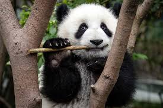
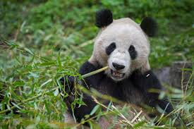

¿Quiénes Somos?
PandEx es una empresa dedicada a la investigación y promoción del bienestar de los osos pandas. Nuestro enfoque está en la educación y la concienciación sobre esta especie única, con el objetivo de difundir conocimientos sobre su hábitat, comportamiento y los desafíos que enfrentan en la naturaleza. Trabajamos en estrecha colaboración con expertos en biología animal y organizaciones de conservación para ofrecer información precisa y actualizada sobre los pandas y su preservación.
Autor
Este sitio web ha sido desarrollado por Jordi Gallardo, como parte de un proyecto educativo. El objetivo de la página es proporcionar información precisa y educativa sobre los osos pandas y su conservación. Agradezco el apoyo de todas las fuentes consultadas y espero que este proyecto sirva para sensibilizar sobre la importancia de proteger a esta especie única.
¿Qué son los osos pandas?
Los osos pandas, también conocidos como "panda gigante", son animales nativos de China, conocidos por su pelaje blanco y negro y su comportamiento tranquilo. A pesar de su aspecto similar al de los osos, son parte de la familia de los osos y tienen una dieta mayormente vegetariana, consumiendo principalmente bambú.

Alimentación de los osos pandas
El panda gigante tiene una dieta especializada en bambú, que constituye más del 99% de su alimentación. Aunque los pandas son carnívoros por naturaleza, su sistema digestivo es similar al de los herbívoros, lo que les permite digerir el bambú, aunque no lo digieren completamente.
Conservación de los pandas
Los osos pandas están catalogados como una especie vulnerable debido a la pérdida de hábitat y la baja tasa de natalidad. A pesar de los esfuerzos de conservación, como las reservas naturales y programas de reproducción en cautiverio, la población de pandas sigue siendo pequeña. Es fundamental proteger sus hábitats de bambú y promover la concientización sobre su preservación.
